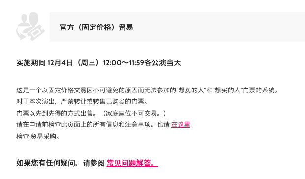

在整理文献时突然想看夜鹿live，于是整理了一篇攻略备用。不过有些细节是我自己查资料以后的理解，不一定准确，欢迎指正。
01 买票
不幸的热知识
- 比较大的live都是抽选制，即先抽票，剩下的票才会开抢票。——欧皇才是婆罗门！
- 位置都是随机的，但内场票一般都在前几轮中抽完。部分会分不同等级的指定席分价格卖。
- 抽票买票都需要日本手机号
基础知识
- Fan Club（FC）
有些日本艺人会有自己的收费订阅制fanclub/会员俱乐部，会有特典内容、先行抽票等等福利。
抽live票的各种途径里这应该是中奖率最高、位置最好的一种。
- 「抽选者」与「同行者」问题
FC抽票时需要注意，如果抽一张票（即无同行者），那么这张票最终「使用者」需要和「抽选者」保持信息一致。说人话就是，谁抽的谁去。拿着别人名字的票有被查的风险。
而如果是一个人用FC抽两张票，第二张票（也叫002）除非有特殊标注，一般不要求使用者身份。纸质票要求「同行者」和「抽选者」一起入场，电子票则可以直接app内转让。
这个问题在代抽「改名字」、买二手票时都会遇到，务必弄清情况。
- 开票轮次
日本live分批次开票，顺序一般为：（*有些会省略几轮）
1）fanclub先行（会員先行），按阶级依次一轮二轮。以yrsk为例，购票人&同行者双会员第一批，其次是同行者非会员。
2）艺人官网先行（オフィシャル先行）
3）票务网站登陆者先行
4）罗森/7-11/全家先行
5）一般发售
举两个例子：
1）米津玄师2023 Tour 分为1次先行（需专辑）、2次先行（需专辑）、一般抽选
抽过19年老米演唱会的一般抽选，没抽到。
2）Yorushika 2023 「月と猫のダンス」分为会员先行1、会员先行2、官方先行
实际操作（for大陆）
- 正规途径
如果有日本手机号 ==> 正常流程抽选 - 中选 - 支付 - 出票 etc
没有 ==>正经人走什么正规途径（敲黑板）
- 不太规范但更加方便的途径
一个是通过票通收二手票。票通是一个专注演出票交易的日本网站，我看下来这种方式的优点是流程正规有安全保障，价格相对透明，缺点是需要知道其中的术语潜规则，需要自己挑入手时机、自己跟卖家沟通，有时候还需要被卖家集中起来（？）一起入场，所以完全不懂日语会比较麻烦。
另一个是淘宝代抽票，比如可以搜索”pia抽票“。
这里也分成两种，一种是商家直接帮你代抽，费用组成是商家抽票费用+（抽到了再付的）票费。这种优点是方便无脑，不过要弄清这个票是否要求「使用者身份与购票信息一致」，需要的话就意味着代抽时要提供自己的个人信息，这个就智者见智了。
另一种是商家提供日本手机号，费用自己直接支付。这一种相当于是全程自己操作，没有任何信息泄露风险，不会有「使用者与抽选者信息不一致」的问题，但相应地会增加自己的操作成本。
另外，推特等SNS平台也是一种渠道，这就和国内wb收票有点像，最大区别是「同行者身份」这个老问题。
小结（TLDR）
- 选择你的回合——fan club抽选/一般抽选或贩卖/二手市场
- 选择你的英雄——各个买票渠道 不分先后
1）tb代抽（全包 ver.）
2）tb代抽（手机号ver）
3）通过票通/官方resale/其他二手市场收二手票
4）用日本（朋友的）手机号正常买
- 使用你的技能——在此基础上问清卖方以下问题
1）票是否要求「同行者」的身份？最最重要的问题
2）怎么把票给我？
3）我到现场怎么用？（需要人带or直接进）
*如果有出票需求，还可以问二次转让的问题
02 卖票/退票
考虑到跨国看live的时间轴长，不确定性更高，所以把卖票退票相关事宜一起整理出来。
流程
-
官方原因停办：官方会退款
-
个人原因去不了：
1）提交官方转售 可搜索关键词 演唱会名字+チケットリセール or 演唱会名字+チケットトレード
米津官方转售页
2）其他的二手市场如Mercari、雅虎拍卖、票通 或许对日语水平有一定要求
3）tb代转卖（万能的、）
费用及损失
- 官方交易
不管是退款还是官方转售，都是按照票面价给的。
所以最终的Cost = 买入价格 - 票面价格
- 二手市场
要看卖的时机和定价了，需要承担一定卖不出去的风险和与国际友人沟通造成的精神损失
- tb代卖
基本同上，还会附加tb转卖的手续费cost。
随便举一个case
单位是rmb
票本体：450
收票手续： X（取决于几抽出货） * tb手续费50～70
转卖额外：+ 手续费算100
总共损失= 手续费100～200